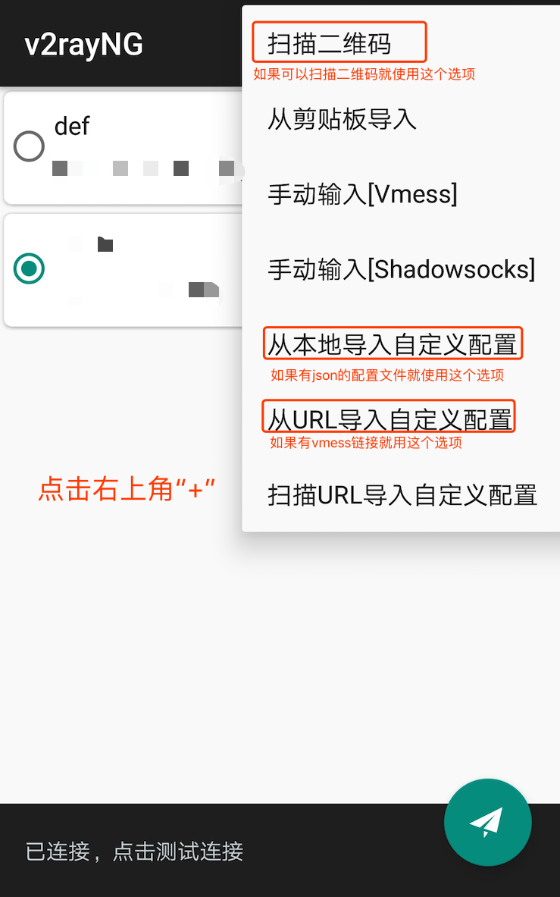
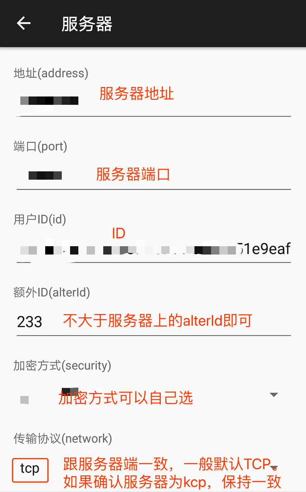
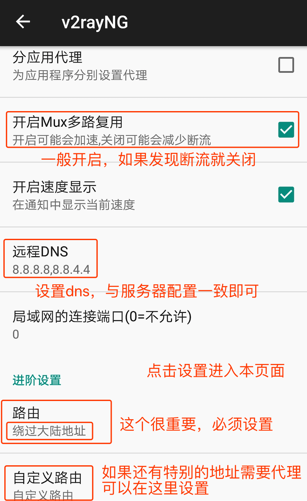

安卓 V2rayNG 客户端配置3步教程
-
安卓系统下推荐使用V2rayNG这款客户端，配置简单功能齐全。默认直接开启全局模式，所有流量都走代理。需要在设置中修改。
-
第一步：如果有二维码可以直接扫描二维码加载服务器参数。如果有json格式的配置文件可以通过“导入自定义配置”加载。如果有vmess链接，则使用“从URL导入”。如果都没有，则手动输入vmess

-
第二步：没有二维码、json格式的配置以及vmess链接，则按照下图手动输入。

-
第三步：服务器参数设置完成之后，就可以按照下图设置本地的参数。其中最重要的是“路由”，需按照途中说明设置。如果发现国内应用卡顿，就打开“分应用代理”。
